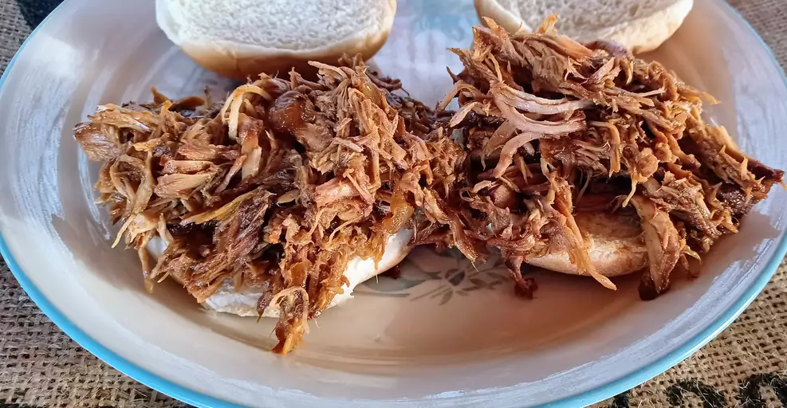

Slow Cooker Texas Pulled Pork
Pulled Pork
This Texas-style pulled pork recipe has a tangy barbeque
sauce that's easy to make in the slow cooker. I like to
serve the shredded pork on toasted buttered rolls. My
family's favorite!
Ingredients
- Vegetable Oil
- Pork Roast
- Barbeque Sauce
- Apple Cider Vinegar
- Chicken Broth
- Light Brown Sugar
- Mustard
- Chili Powder
- Onion
- Cloved Garlic
- Worcestershire Sauce
Steps
- Pour vegetable oil into the bottom of a slow cooker.
Place pork roast into the slow cooker; pour in barbeque
sauce, vinegar, and chicken broth. Stir in brown sugar,
yellow mustard, Worcestershire sauce, chili powder, onion,
garlic, and thyme. Cover and cook on Low for 10 to 12 hours
or High for 5 to 6 hours until pork shreds easily with a fork.
- Remove pork from the slow cooker, and shred the meat
using two forks. Return shredded pork to the slow cooker,
and stir to combine with juices.
- Spread the inside of both halves of hamburger buns with
butter. Toast buns, butter-side down, in a skillet over
medium heat until golden brown. Spoon pulled pork into
toasted buns.